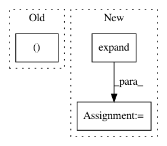

bed0a0ae26451c9897cf1ee0f7302e42eba9b42c,transformer/Models.py,,get_attn_subsequent_mask,#,31
Before Change
""" Get an attention mask to avoid using the subsequent info."""
assert seq.dim() == 2
attn_shape = (seq.size(0), seq.size(1), seq.size(1))
subsequent_mask = np.triu(np.ones(attn_shape), k=1).astype("uint8")
subsequent_mask = torch.from_numpy(subsequent_mask)
if seq.is_cuda:
subsequent_mask = subsequent_mask.cuda()
After Change
subsequent_mask = torch.ones((len_s, len_s), device=seq.device, dtype=torch.uint8)
subsequent_mask = torch.triu(subsequent_mask, diagonal=1)
subsequent_mask = subsequent_mask.unsqueeze(0).expand(sz_b, len_s, len_s)
return subsequent_mask
class Encoder(nn.Module):
""" A encoder model with self attention mechanism. """
In pattern: SUPERPATTERN
Frequency: 3
Non-data size: 3
Instances
Project Name: jadore801120/attention-is-all-you-need-pytorch
Commit Name: bed0a0ae26451c9897cf1ee0f7302e42eba9b42c
Time: 2018-08-23
Author: yhhuang@nlg.csie.ntu.edu.tw
File Name: transformer/Models.py
Class Name:
Method Name: get_attn_subsequent_mask
Project Name: SenticNet/conv-emotion
Commit Name: 87d57a3d34a1eef2c6ad5519741710e3321f136c
Time: 2019-03-19
Author: 40890991+soujanyaporia@users.noreply.github.com
File Name: DialogueRNN/model.py
Class Name: BiE2EModel
Method Name: forward
Project Name: open-mmlab/mmdetection
Commit Name: 60312064e4d7eb62470977bffff75c46f4080a22
Time: 2021-01-24
Author: xvjiarui0826@gmail.com
File Name: mmdet/core/post_processing/bbox_nms.py
Class Name:
Method Name: multiclass_nms